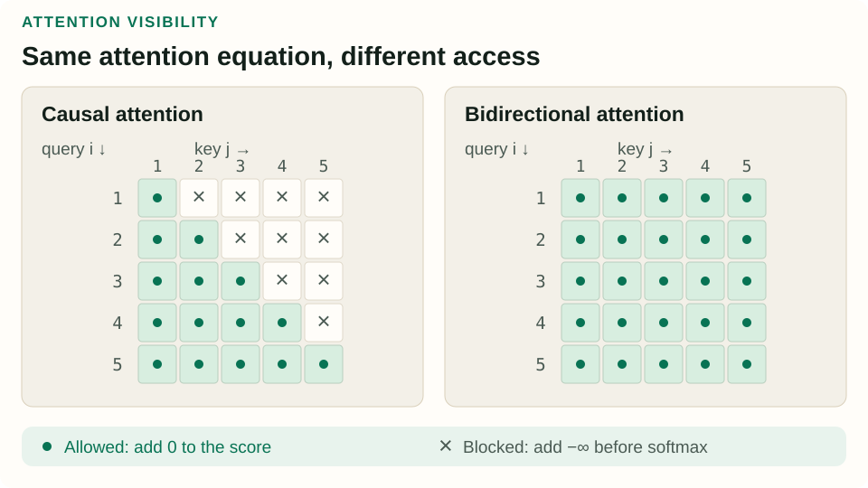
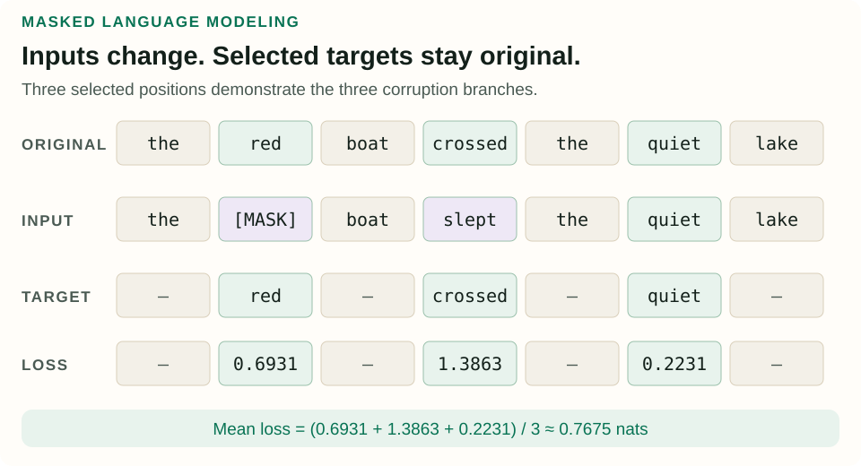
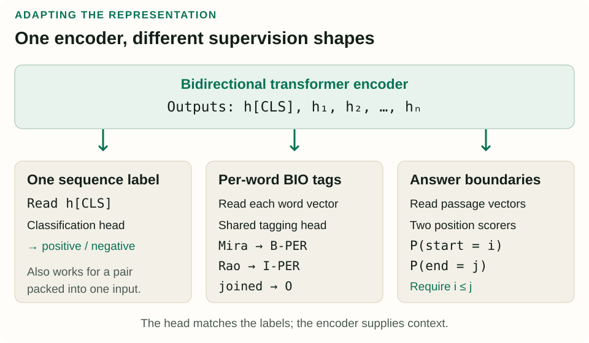

Masked Language Models: Learning from Both Sides
To label a word already present in a sentence, the words after it can be just as useful as the words before it. A masked language model learns to use that complete context by reconstructing deliberately corrupted text.
What you will learn: separate attention visibility from input corruption and loss selection; calculate a masked-token loss; and turn contextual vectors into sentence labels, entity spans, or answer positions.
This original tutorial accompanies Chapter 9, “Masked Language Models”, of Jurafsky and Martin’s August 19, 2026 draft. It follows architectures (§9.1), bidirectional encoders (§9.2), pretraining (§9.3), classification (§9.4), and named-entity recognition (§9.5). The span-question-answering extension comes from the original BERT paper. All figures and worked examples are newly constructed.
1. What can each position see?
Consider The crane lifted the steel beam and The crane spread its wings. A static word embedding gives crane the same stored vector in both sentences. A contextual representation can change with the surrounding text. Looking right reveals especially useful evidence here: the actions suggest different meanings.
A bidirectional transformer encoder produces one output vector per input position. Each position can attend to positions on both sides, subject to padding or other structural restrictions. “Bidirectional” describes information access, not two separate passes whose final answers are glued together.
| Architecture | Main output | Typical attention access |
|---|---|---|
| Encoder | Contextual vectors for the supplied sequence | Both sides of the input |
| Decoder | A distribution for the next generated token | Earlier and current input positions |
| Encoder–decoder | A generated output sequence conditioned on an input | Bidirectional source encoding; causal output attention plus attention to the source |
For one attention head, the same computation can express the first two patterns:
Attention(Q, K, V) = softmax(QKᵀ / √dk + A)V
Aij = 0 for allowed query–key pairs; −∞ for blocked pairs.
The softmax runs over key positions within each query row. A causal mask blocks columns to the right of the query. A bidirectional encoder removes that future-position restriction, while still excluding padding keys. An allowed cell means attention is permitted; the learned weight might still be tiny.

Removing the causal mask while keeping ordinary next-token labels would expose answers: the representation at position i could read token i+1, which it is supposed to predict. Merely hiding a single attention diagonal is also insufficient when the target remains in the input: residual connections or indirect paths through other positions can carry it. The training task must change with the visibility rule.
2. From subwords to contextual vectors
Original BERT tokenizes with WordPiece. A word may occupy several model positions; a displayed prefix such as ## marks a continuation piece in the tokenizer’s notation. Use the checkpoint’s tokenizer and keep the mapping back to the original words and character offsets. A convenient-looking split is not necessarily that model’s split.
For a sentence pair, BERT packs [CLS] A [SEP] B [SEP]. Each position starts from the sum of three learned vectors:
xi = token_embedding(tokeni) + position_embedding(i) + segment_embedding(segmenti)
Position embeddings identify locations. Segment, or token-type, embeddings distinguish the A and B portions; they are added vectors, not extra words inserted into the sequence. The special [CLS] position provides an output that a sequence classifier can use. [SEP] marks boundaries. These details belong to the BERT recipe; other encoders may use different tokenizers or position schemes.
The input lookup for crane is fixed for a given token ID. Its output after the transformer layers depends on the whole supplied sequence. Thus the static lookup table and contextual outputs coexist inside one model. A different output vector is useful evidence of contextual processing, but it does not automatically establish a neatly separated, human-named word sense.
3. Select, corrupt, reconstruct
Masked language modeling starts with clean text whose token identities are already known. Select some token positions, corrupt their inputs, and train the model to recover the original identities. The corpus supplies the targets; no person has to label every training example.
In the original BERT recipe, about 15% of eligible token positions are selected. Among those selected positions, 80% are replaced by [MASK], 10% by a random vocabulary token, and 10% remain unchanged. Every selected position still predicts its original token. These percentages are conditional on selection, not percentages of the whole sequence. See Devlin et al. (2019), §3.1.
| Outcome | Expected count | Has an MLM target? |
|---|---|---|
| Unselected | 850 | No |
| Selected, replaced by [MASK] | 120 | Yes: original token |
| Selected, random replacement | 15 | Yes: original token |
| Selected, unchanged | 15 | Yes: original token |
These are expectations, not exact quotas for each short sentence. The random and unchanged branches reduce reliance on seeing the special mask token, which is usually absent from downstream classification inputs. Some selected unchanged tokens are intentionally visible to the model. This historical objective is a mixture of prediction problems, not a guarantee that every supervised target is concealed.
Three different meanings of “mask”: an attention mask controls information flow; [MASK] is a vocabulary token used to corrupt an input; a loss-selection mask chooses which output positions receive direct prediction losses. Changing one does not automatically change the others.
4. Calculate the loss and inspect its labels
Use this short teaching sequence and deliberately select three positions so we can see all corruption branches at once. The selection rate here is illustrative, not the 15% recipe. Treat each displayed word as one token and omit special tokens for this calculation.
Original: the red boat crossed the quiet lake
Input: the [MASK] boat slept the quiet lake
Target: — red — crossed — quiet —The model should reconstruct crossed, not reward the replacement slept. It should also predict quiet at the selected unchanged position. Unselected instances of the are context, without their own direct MLM loss in this example.
An MLM head transforms each final hidden vector into vocabulary logits and then a softmax distribution. Let M be the selected positions, x the original tokens, and x̃ the corrupted input. Using natural logarithms:
LMLM = −(1 / |M|) Σi∈M ln Pθ(xi | x̃)
Suppose the model assigns probabilities 0.50, 0.25, and 0.80 to the correct tokens at our three selected positions. These are stipulated model outputs for the calculation; the remaining probability at each position belongs to other vocabulary entries.
| Gold token | Observed input | P(gold) | −ln P(gold) |
|---|---|---|---|
| red | [MASK] | 0.50 | 0.693147 |
| crossed | slept | 0.25 | 1.386294 |
| quiet | quiet | 0.80 | 0.223144 |
LMLM = (0.693147 + 1.386294 + 0.223144) / 3 ≈ 0.767528 nats

The denominator is three selected targets, not seven input positions. In a batch, averaging over all selected tokens gives each target equal weight; averaging sentence means would weight sentences differently when they contain different numbers of targets. Be explicit about that reduction.
No direct loss does not mean no gradient. A context token can influence a selected position through attention, so the selected loss can backpropagate into that context token’s representation and shared encoder parameters. This is why it is misleading to say the other 85% of input positions contribute nothing to learning.
Inspect the corruption, labels, and denominator
Keep the example probabilities fixed while changing the treatment of each candidate position. “Unselected” removes that position from the supervised set. The confidence slider changes only the stipulated probability for red; this is an arithmetic exercise, not a running language model.
Input: the [MASK] boat slept the quiet lake
Replacing a selected token with its original value keeps its target active. Ignoring it removes its loss. The numerical probabilities are held fixed here to isolate that bookkeeping.
Check yourself: If “quiet” becomes unselected, should its 0.223144 loss still be included?
No. The new mean is (0.693147 + 1.386294) / 2 = 1.039721 nats. The mean rises because we removed the easiest target; neither remaining probability became worse. This is why changing the corruption or selection policy also changes what a reported loss measures.
5. NSP and the rest of pretraining
Original BERT also trained a next-sentence prediction classifier. Given two text segments A and B, half the examples used the actual following segment and half used a randomly sampled segment. A classifier attached to the [CLS] output predicted the binary label, alongside the MLM objective. Despite its name, this is classification of a supplied pair, not generation of the next sentence.
NSP is historical context rather than a requirement for every encoder. RoBERTa (Liu et al., 2019) removed NSP while changing training choices including data, batching, and masking. Dynamic masking resamples corruptions across encounters with text. The architectural permission to read both sides does not depend on retaining BERT’s second objective.
Pretraining data and tokenization matter too. Multilingual training must decide how to allocate vocabulary capacity and examples across languages. Sampling purely by corpus size can heavily favor the largest language. A distribution proportional to language frequency raised to a power between zero and one gives relatively more weight to smaller languages. Shared capacity can help transfer, but equal token counts or one aggregate score do not establish equal performance across languages.
6. Adapt an encoder to classification
For sequence classification, pass the final [CLS] representation through a learned classification head. With hidden width d and K classes, a simple head has weights of shape K × d and K biases, using column vectors:
p(class | text) = softmax(W hCLS + b)
For pair classification, pack both sequences into the input and classify their joint representation. In natural-language inference, a premise such as Mira owns two bicycles supports Mira owns a bicycle, contradicts Mira owns no bicycle, and leaves Both bicycles are blue undecided. These are entailment, contradiction, and neutral labels; predicting an NSP label would not answer this task.
Frozen features keep the encoder parameters fixed and train only the new head. Full fine-tuning updates both encoder and head using the supervised task loss. Updating selected layers or a smaller parameter subset is another option. State which parameters move; pretraining does not force one adaptation strategy.
The vocabulary-prediction head used for MLM and the downstream classification head answer different questions. At normal classification time, feed the actual task input, not randomly corrupted text. A raw pretrained [CLS] vector is also not automatically a calibrated classifier or an ideal sentence-similarity embedding: the head and training objective determine its use.

7. Recognize entities with BIO tags
Named-entity recognition finds mentions and labels their types. Both boundaries and types matter: identifying only North is different from identifying the organization North Star Labs. A token-level classifier can express spans using BIO labels: B begins an entity, I continues it, and O is outside.
| Word | Label | Interpretation |
|---|---|---|
| Mira | B-PER | Begin person |
| Rao | I-PER | Continue that person |
| joined | O | Outside an entity |
| North | B-ORG | Begin organization |
| Star | I-ORG | Continue that organization |
| Labs | I-ORG | Continue that organization |
| in | O | Outside an entity |
| Pune | B-LOC | Begin a location |
| . | O | Outside an entity |
For T entity types, BIO has 2T + 1 tags. A shared linear head maps each contextual vector to that tag set. Independent argmax decisions can create inconsistent sequences, such as starting with I-ORG; structured decoding can account for transitions. BIOES additionally distinguishes the end of a span and a single-word span.
WordPiece positions need not align with annotated words. Suppose a hypothetical tokenizer splits Mira into Mi and ##ra. One clear policy is to supervise B-PER on the first piece, ignore the second piece’s direct tagging loss, and use the first piece’s prediction as the word label. Other policies aggregate or label multiple pieces. Keep the training and decoding rules consistent, and exclude special tokens and padding from word-level evaluation.
Evaluate exact typed entity spans, not just token accuracy. Our gold example has three entities: Mira Rao/PER, North Star Labs/ORG, and Pune/LOC. If a system predicts Mira/PER plus the two other entities correctly, it has two true positives, one false positive for the incomplete person span, and one false negative for the missing full person span.
Precision = 2/3; recall = 2/3; F1 = 2PR/(P+R) = 2/3
The many O tokens are not additional correct entities. Counting them as such would hide the boundary error. Keep the entity inventory and matching rules fixed when comparing systems, and examine rare names, language differences, and boundary failures alongside the aggregate score.
8. Extract an answer span
A short extension illustrates another useful head. Given Where did Mira move? and a passage containing Mira moved to Pune last year, pack question and passage together. Two learned scoring vectors assign each eligible passage position a start score and an end score. Separate softmax operations produce start and end distributions.
For a gold span from s to e, a common loss is −ln Pstart(s) − ln Pend(e). Decode a valid pair with start ≤ end, restricting candidates to the passage and any required maximum answer length. The original BERT paper, §4.2, uses this approach for extractive question answering. Supporting unanswerable questions requires an additional no-answer convention.
This head chooses a span already present in the input; it is not an unrestricted answer generator. Similarly, an ordinary masked-token loss is not the causal likelihood of an entire sentence. Its conditionals see right context and depend on a corruption policy. Report MLM validation loss with that policy fixed, and evaluate the adapted model on the actual classification, tagging, or extraction task.
The central pattern is now concrete: choose what information is visible, choose which outputs are supervised, and make the head match those targets. The interpretability companion asks what evidence can tell us about the representations and computations learned inside these models.